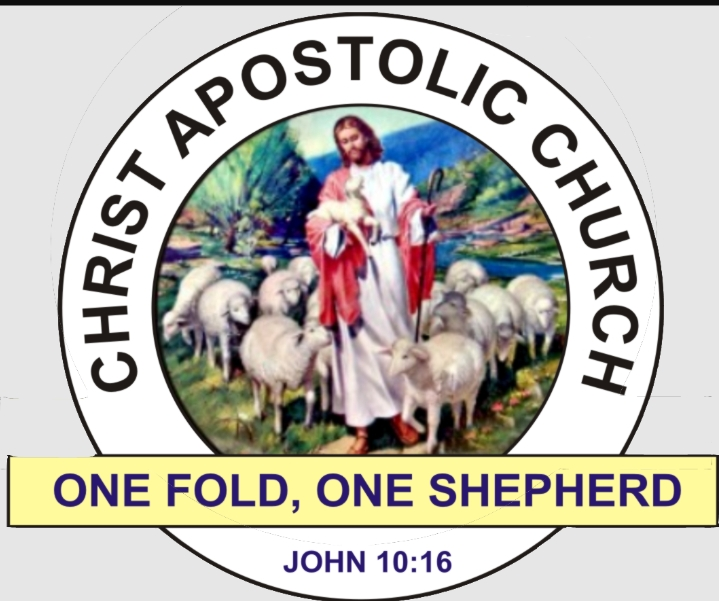

WELCOME TO(TACN)WEB
This is expected to be known by Every Beliver of the Apostolic Church
1. The unity of God head and the trenity of the person
2. The utter depravity of human nature, the necessity for repentance and regeneration and the eternal doom of the finally impenitent.
3. The virgin birth, sinless life, atoning death, triumphant resurrection, ascension, and abiding intercession of our Lord Jesus Christ; His second coming, and millennial reign upon earth.
4. Justification and Sanctification of the believer through the finished work of Christ.
5. The Baptism of the Holy Ghost for believers, with signs following.
6. The nine gifts of the Holy Ghost for the edification, exhortation and comfort of the Church, which is the body of Christ.
7. The Sacrements of Baptism by immersion and of Lord’s Supper.
8. The Divine inspiration and authority of the Holy Scripture.
9. Church government by apostles, prophets, evangelists, pastors, teachers, elders and deacons.
10. The possibility of falling from grace.
11. The obligatory nature of tithes and offerings.
12. Divine Healing through obedience to the command of our Lord Jesus Christ and Faith in His Name and merit of His Blood for all sickness, disease and infirmities.
O K A Y